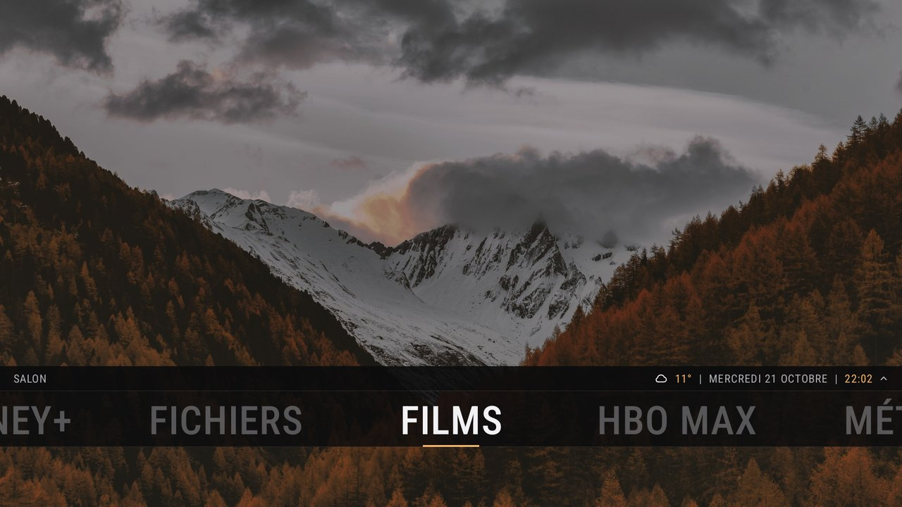

Des applis que j'utilise tous les jours, gratuites, à télécharger et installer directement.

TV Launcher
Google TV · Chromecast
Un écran d'accueil simple pour Google TV : vos applis, l'heure, la météo et votre fond d'écran. Explorateur de fichiers et lecteur vidéo intégrés pour le NAS et les clés USB. Son style s'inspire du thème Aeon Nox: SiLVO de Kodi.
Sans publicitéBarre ou grandes tuilesReprise de lectureMusique en cours
Un accueil à tuiles pour Android Auto, à l'arrêt : navigateur, stations, stationnement, dashcam et fichiers sur l'écran de la voiture. Dashcam testée avec une 70mai (A810) ; les autres modèles ne sont pas garantis.
Pleins, consommation, dépenses et échéances de vos véhicules. Le même compte que le site autotracks.web.app, avec des rappels avant l'entretien et le contrôle technique.
Les applis ne passent pas par le Play Store : Android demande une autorisation la première fois. Une nouvelle version s'installe de la même façon, par-dessus l'ancienne, sans rien perdre.
Google TV ou Chromecast avec Google TV. Un PC est nécessaire une seule fois pour en faire l'accueil.
Sur la TV, installez l'appli Downloader depuis le Play Store, ouvrez-la et tapez le code 3615698 (ou l'adresse itkyp-apps.github.io), puis Télécharger sur la carte TV Launcher.
Autorisez Downloader à installer des applis quand la TV le demande, puis Installer. TV Launcher apparaît dans la liste des applis : vous pouvez déjà l'essayer.
Pour qu'il remplace l'accueil Google (bouton Accueil de la télécommande), désactivez l'accueil Google depuis un PC, en ADB (débogage activé dans les options pour les développeurs de la TV) :
Sur le téléphone, touchez Télécharger sur la carte AutoKit, ouvrez le fichier et autorisez l'installation la première fois.
Dans les paramètres d'Android Auto, touchez dix fois « Version » pour activer le mode développeur.
Menu ⋮ puis « Paramètres pour les développeurs » : cochez « Sources inconnues ». Sans ça, Android Auto ne montre pas AutoKit dans la voiture.
Dans la voiture, AutoKit est dans la liste des applis d'Android Auto. Il ne s'utilise qu'à l'arrêt.
Téléphone Android 15 ou plus. Un compte AutoTracks est nécessaire : il se crée dans l'appli (ou sur autotracks.web.app, c'est le même).
Sur le téléphone, touchez Télécharger sur la carte AutoTracks, ouvrez le fichier et autorisez l'installation la première fois.
Ouvrez AutoTracks, puis connectez-vous ou touchez « Créer un compte ». Si vous utilisez déjà le site, vos véhicules, pleins et dépenses apparaissent.
Pour les rappels d'entretien et de contrôle technique, activez-les dans les Paramètres de l'appli : elle demande alors l'autorisation d'envoyer des notifications.
Ces applis vous rendent service ?
Elles restent gratuites et sans publicité. Un petit don aide à les faire vivre.